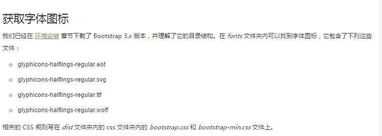
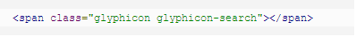
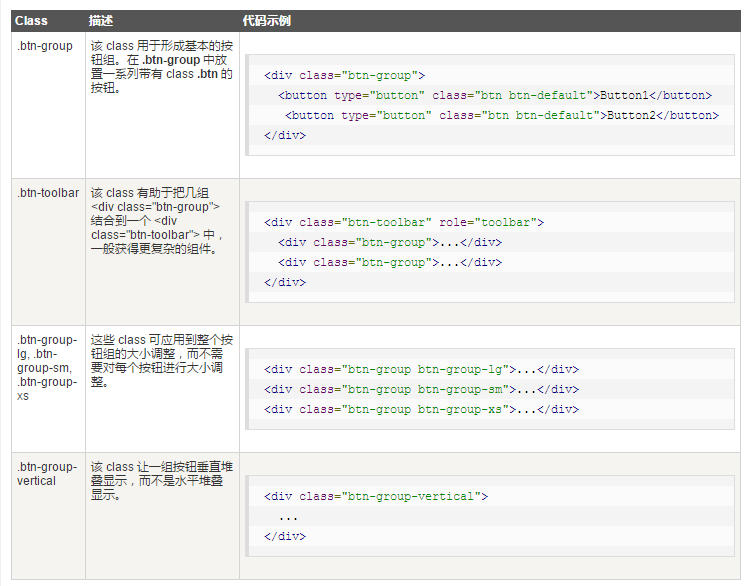

Bootstrap 字体图标(Glyphicons)：字体图标是在 Web 项目中使用的图标字体

字体图标列表:
点击这里，查看可用的字体图标列表。
字体图标的使用：如需使用图标，只需要简单地使用下面的代码即可(图标和文本之间保留适当的空间)

Bootstrap 下拉菜单（Dropdowns）：下拉菜单是可切换的，是以列表格式显示链接的上下文菜单。这可以通过与
下拉菜单（Dropdown） JavaScript 插件 的互动来实现。
使用 class dropdown-header 向下拉菜单的标签区域添加标题
Bootstrap 按钮组：按钮组允许多个按钮被堆叠在同一行上
可以通过
Bootstrap 按钮（Button） 插件 添加可选的 JavaScript 单选框和复选框样式行为。
Bootstrap常用的类：

嵌套的按钮组：
Bootstrap 按钮下拉菜单：如需向按钮添加下拉菜单，只需要简单地在在一个 .btn-group 中放置按钮和下拉菜单即可。您也可以使用 来指示按钮作为下拉菜单
更多按钮下拉菜单的例子